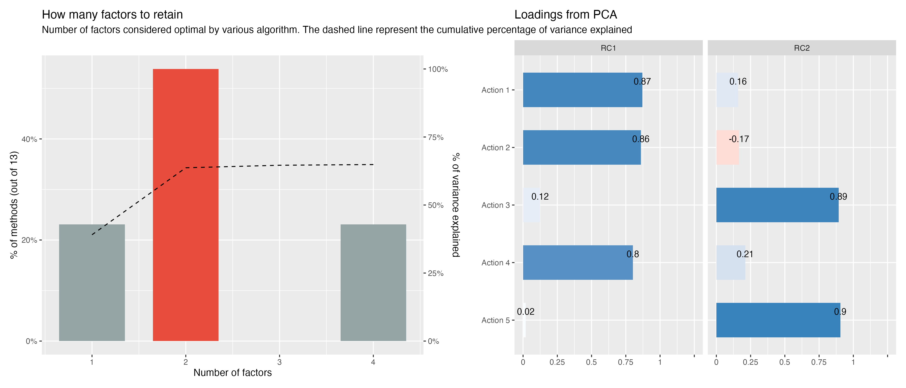
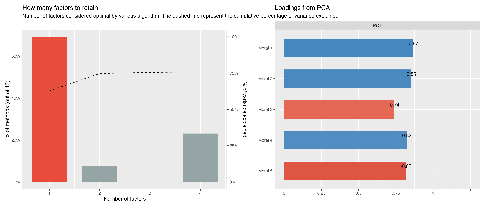
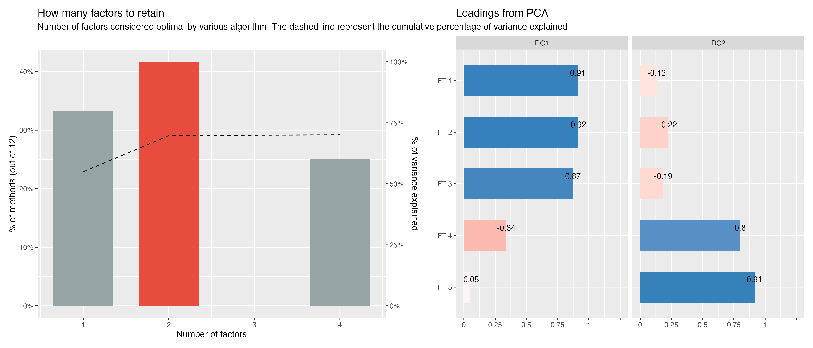
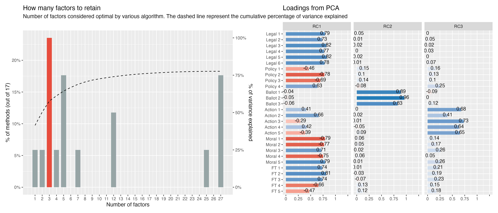

The Personal is Political
Presentation for the Demography and Survey Science Team @ Meta
Jul 25, 2025
Context
Dobbs v. Jackson Women’s Health Organization (2022)
The future of abortion in the U.S. has never been more uncertain – or more contested
Outpouring of legislation, mobilization, and public discourse

The problem
Average Treatment Effects (\(ATE\)s) tell us the effect if everyone were to receive the treatment
We can think of it as a weighted average of the effects among those likely and unlikely to encounter the treatment
When treatment effects vary depending on who receives the message, the \(ATE\) can be misleading
- Example: The same message delivered on Fox News vs. MSNBC


The problem
The \(ATE\) we estimate from a standard design depends on the relative size and response of these groups
Likely: +
ATE: 0

Unlikely: -
Important
A polarizing treatment can yield a null \(ATE\) even when it produces large but opposing effects across audiences
Outcomes
Legal-Policy
- PCA of three multi-item scales (6 item yes/no legal scale; 4-item policy scale, 7-point likert; 3-item ballot initiatives, 5-point likert)
- Pre-post change of 6-item yes/no legal
Action
- PCA of 5-item action scale, 5-point likert
Moral
- PCA of 5-items, 7-point likert
Affect
- PCA of 5 abortion-related feeling thermometers (0-100)
Combined omnibus measure
- PCA of all post-treatment measures
By law, do you think women should have access to abortion if she… (Yes/No)
- has already been pregnant for six weeks
- has already been pregnant for more than one trimester (more than 12 weeks of pregnancy)
- was not using birth control
- has a partner who disagrees with her decision
- has already had an abortion before
- wants an abortion for any reason
How much do you agree or disagree with the following statements regarding abortion? (7-point scale: Strongly disagree – Strongly agree)
- State law should require a woman to attend multiple appointments over several days in order to get an abortion.
- State law should prohibit private health insurance from covering abortions.
- State law should require women to receive counseling that advises childbirth over abortion.
- State law should require that publicly-funded health insurance for poor people covers the cost of abortions.
Assume this hypothetical scenario: your state is considering a number of ballot measures during the next few years. Below are some of the ballot measures under consideration. Would you favor or oppose each ballot measure that would prohibit doctors from performing abortions on patients who are: (5-point scale: Strongly oppose – Strongly favor)
- beyond 20 weeks of pregnancy
- beyond 15 weeks of pregnancy
- beyond 6 weeks of pregnancy
These days people are busy and often don’t have time to do many of the things they would like to. Suppose in the next month someone asked you to engage in the following activities. How likely would you be to say yes? (5-point scale: Not at all likely – Extremely likely)
- Volunteer for an organization that supports women who need abortions.
- Accompany a friend or family member to an abortion appointment.
- Protest outside an abortion clinic to show my opposition to abortion.
- Call a politician to express my support for legal and available abortion.
- Call a politician to express my opposition to legal and available abortion.
How much do you agree or disagree with the following statements regarding abortion? (7-point scale: Strongly disagree – Strongly agree)
- Women who have had abortions have done something wrong.
- Women who have had abortions should feel badly about themselves.
- If a woman does not want to be pregnant, she should consider an abortion.
- Given the availability of modern birth control, women who have abortions are just irresponsible.
- There’s nothing wrong with having an abortion.
Use the thermometer below to express how you feel toward the following individuals and groups. 0 is most cold. 100 is most warm.
- Women who have had an abortion
- Doctors who provide abortions
- Pro-choice activists
- Pro-life activists
- The Supreme Court
Legal Policy

Action

Moral

Feeling Thermometers

Combined omnibus measure

Personal narratives are most persuasive among those least likely to hear them